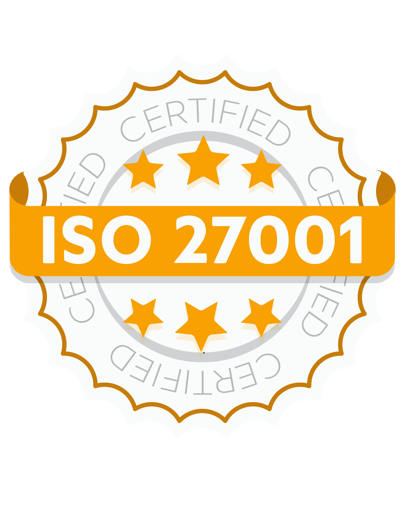
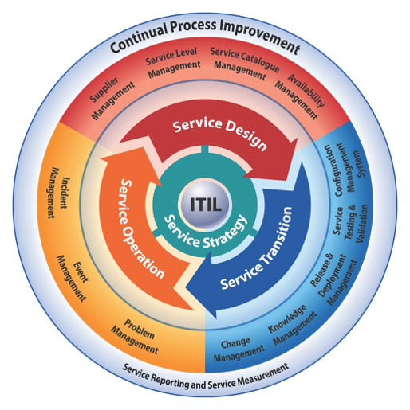

Principales Metodologías de Seguridad Informática
ISO/IEC 27001
Características:
- Es una norma internacional para la gestión de la seguridad de la información.
- Permite establecer, implementar, mantener y mejorar continuamente un Sistema de Gestión de Seguridad de la Información (SGSI).
- Basada en la identificación de riesgos y aplicación de controles adecuados.
Ejemplo: Empresas como bancos y aseguradoras la usan para proteger datos confidenciales de clientes y cumplir con regulaciones internacionales.
NIST Cybersecurity Framework

Características:
- Establece un marco de trabajo con cinco funciones clave: Identificar, Proteger, Detectar, Responder y Recuperar.
- Proporciona pautas flexibles y escalables para mejorar la seguridad cibernética.
- Útil tanto para organizaciones del sector público como privado.
Ejemplo: Agencias gubernamentales de EE.UU. y grandes corporaciones lo utilizan para estructurar sus estrategias de ciberseguridad.
COBIT
Características:
- Marco de gobierno y gestión de TI alineado con los objetivos empresariales.
- Incluye buenas prácticas para la auditoría, control y mejora de la seguridad informática.
- Ayuda a garantizar que la información de la empresa esté bien protegida y administrada.
Ejemplo: Grandes corporaciones utilizan COBIT para estructurar sus políticas de seguridad y cumplimiento regulatorio.
ITIL
Características:
- Conjunto de mejores prácticas para la gestión de servicios de TI.
- Ayuda a las organizaciones a administrar incidentes, cambios y problemas de seguridad de manera eficiente.
- Reduce tiempos de respuesta y mejora la continuidad del negocio.
Ejemplo: Empresas de tecnología aplican ITIL para gestionar incidentes de seguridad y minimizar impactos en sus operaciones.
OCTAVE
Características:
- Metodología de gestión de riesgos enfocada en la protección de activos críticos de la organización.
- Permite evaluar amenazas y definir estrategias de mitigación adecuadas.
- Proporciona un enfoque integral, considerando aspectos técnicos, organizativos y humanos.
Ejemplo: Empresas del sector financiero usan OCTAVE para evaluar y minimizar riesgos en operaciones electrónicas.
Zero Trust
Características:
- Modelo de seguridad basado en la idea de que no se debe confiar en ningún usuario o dispositivo por defecto.
- Requiere autenticación continua y monitoreo constante para minimizar riesgos.
- Implementado mediante el control de acceso basado en identidad y segmentación de redes.
Ejemplo: Empresas tecnológicas y financieras utilizan Zero Trust para reforzar la seguridad en sus redes y prevenir accesos no autorizados.